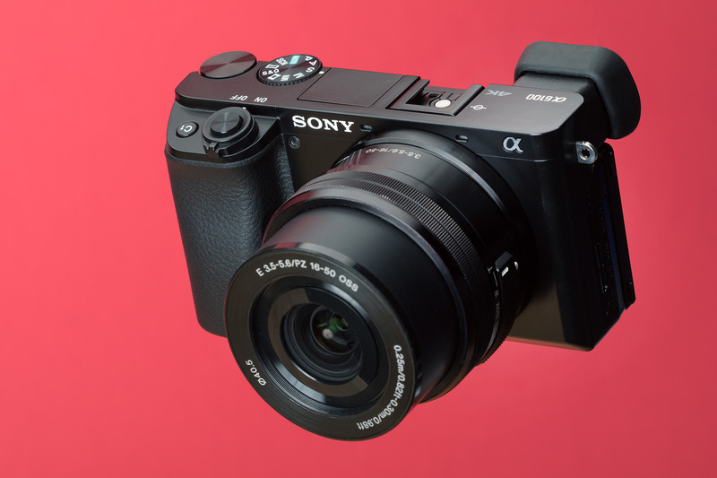

About Me:
My name is Koy Gregerson, I am studying Computer Science at BYU - Idaho I was born and raised in Spokane, Washington. Some of my other hobbies I enjoy when I'm not taking pictures are: reading, making designing CGI, satiating my horology obsession (watches), going to the gym, hiking, or spending time with family and friends Contact Me: I'm thrilled that you've taken the time to visit my photography portfolio. If you have any inquiries, comments, or project ideas, please don't hesitate to get in touch. I'm always eager to connect with fellow photography enthusiasts, potential clients, or anyone who shares a passion for visual storytelling.
My Tools:
For all of my photography I use a Sony a6100 and either my 35-50mm lens or my 50-210mm lens. I tend to use the latter more often because it allows me to shoot from farther away
You can reach me in any of the following ways:
Email: koygregerson@gmail.com
Phone: (509)-954-8432
Social Media: Connect with me on Instagram @koys_secret_fotography_account
Whether you're interested in discussing a photography project, purchasing prints of my work, or simply want to engage in a conversation about photography and art, I'm here to listen and collaborate. Your feedback and ideas are invaluable to me, and I'm excited to explore the possibilities of visual storytelling together. Thank you for considering me as your photographer and for being a part of this artistic journey. I look forward to hearing from you and creating visual narratives that resonate with your unique vision.